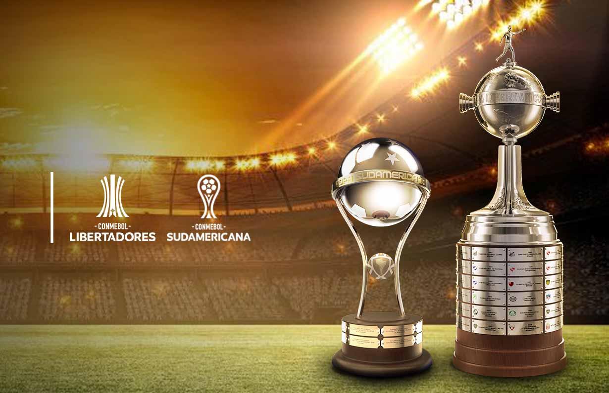

Brasil em campeonatos internacionais

Libertadores e Sulamericana são os principais campeonatos internacionais de clubes da América do Sul
--------Dados--------
- Time com mais títulos da libertadores: Flamengo com 4 títulos
- Times com mais títulos da sulamericana: Independiente del Valle (Equador) e Defensa y Justicia (Argentina) com 2 títulos cada
- Time brasileiro com mais títulos internacionais: São Paulo com 12 títulos